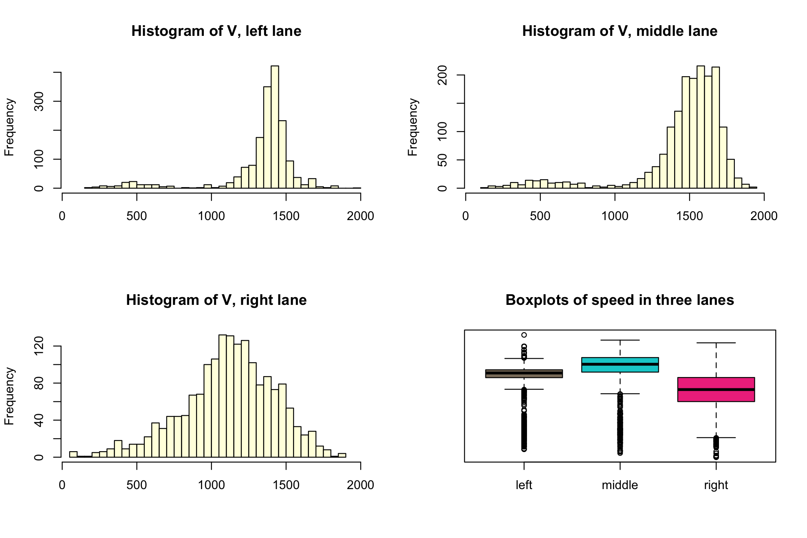

PeMS is a California freeway performance measurement system that has real time and archived data collected from over 25,000 inductive-loop traffic detectors across the state. It receives flow and occupancy measurements every 30 seconds, 2 GB of data per day. Flow is the number of cars passing over a detector in a time interval, and occupancy is the percentage of time there was a car over the loop.
We will look at the data from one particular location on eastbound I-80 in Sacramento from March 14 - 20, 2003, recorded in successive five minute intervals, 1740 intervals in all. For each of the three lanes, there are flow and occupancy measurements.
Our goals are to look at the congestions on a freeway and explore the differences between the lanes of traffic.
Look at the Flow and Occupancy time series: can you guess times of the day? Days of the week?
What is the relationship between $F$ (flow) and $O$ (occupancy)?
We can see that overall the relationship is not linear, but there is clearly a pattern. While it does not seem reasonable to try to fit a regression line to the whole data, we can use local weighted polynomial smoother - loess (fit one line to each of the lanes). Most of the points are concentrated on the left side of the graph, where the relationship certainly seems linear; let's assume it's non-congested traffic. This makes sense since the ratio of $F$ to $O$ is a quantity directly related to speed.
If the length of the cars is the same for all the cars, $F/O$ is proportional to the speed. For simplicity, let's make a few assumptions that will help us formalize the relationships between the variables (we can relax those assumptions later) and make a clear definition of congestion:
Some more useful notation:
Then \[ O = \frac{l}{l + D} = \frac{l}{l + cV + E} = \frac{l - cF}{l + E}. \]
Congestion is a state where $V < m$ and $E = 0$.
How can we determine if an observation (a pair of $F$ and $O$) is in the congestion state or not? First, in the $F$ vs $O$ plot above we can separate observations by taking a derivative of a loess curve and finding a maximum. That would make the occupancy a sole predictor of the congestion (which might be reasonable judging from the first plot). However, as the formula above would indicate, $O$ depends on both $V$ (and therefore $F$) and $E$, and therefore can have the same value in both congestion and non-congestion. Also, more importantly, as it is usually the case, as the flow increases and congestion starts, cars might not observe a minimal distance rule and move closer to each other. That might lead to some "transitional" states that are not as easy to define. Finally, since the data is a time series, time aspect can provide a valuable information in regards to the question. Therefore methods such as HMM (Hidden Markov Models) or some supervised clustering might be better in predicting a state.
From the $F$ vs $O$ plot we can also see clear distinction between the lanes. Let's look into that more closely.
It would be interesting to compare the lanes in terms of
Speed in three lanes - distribution comparison:

We can see that speed in the right lane is slower in general and has much greater spread. However, it doesn't mean that the cars in the right lane are always slower. Also, there is no clear bimodality in the right lane unlike the other two lanes. Middle lane is the fasterst in general (possible reason - fast drivers avoid left lane to not get caught), and the leftmost lane is the least variable (people don't drive slowly there even at night).
Looking at the time series again, this time including the speed and possibly indicating congestion states, will help us understand what is happening in more detail.
Below is a plot of Occupancy vs Speed. Two distinctive clusters can be seen, probably corresponding to the states of congestion and non-congestion. Points between them might correspond to a "transitional" state - when the flow starts exceeding lane capacity and congestion begins. To divide the states, draw a line on the graph by double clicking on two locations inside the plot. The time series plot below it will reflect the assignment of congestion states. To look at individual points, single click on them and they will appear in the time series as well (green-colored). To clear all the points and division of states, click the buttons below the plot. Time series can be zoomed in by selecting a time period for the zoom.
Note: "quadratic curve" pattern for low occupancy in $O$ vs $V$ plot is due to extreme discreteness of flow measurements during low flow times (mostly at night).
In these plots, differences in spreads of speed distributions are noticeable as well. Another interesting observation is that $O$ in congestion state is the highest for the left lane and the lowest for the right for the same $V$. Similar difference between the lanes can be seen in the $F$ vs $O$ graph (higher $F$ in the left lane for the same $O$). To make sense of it, we relax the assumption of cars observing the distance to the vehicle in front. The fact that the highest flow right before congestion occurs in the left lane might indicate that cars in the left lane get closer to each other. The other reason could be that vehicles differ in length, with composition of types of vehicles varying by lane (e.g. greater number of trucks in the rightmost lane, especially at night), which would affect calculation of speed.
To collect and summarize our observations: